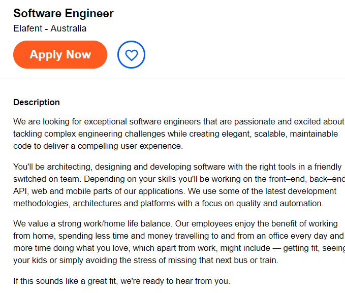

| Home | Personal Info | Interest in IT | Ideal Job | Personality Profile | Project ideas |
|---|
What would an ideal job be?:

Software Engineer Link
This role envolves developing software for a company whether it be for a phone app,software application, website or database creation, implementation and management.
This job is appealing to me as creating software is something that i enjoy as i get to get creative (sometimes) but i also get to figure out and manipulate code to make things tick and although sometimes being simple it can be complex and puzzling and challenging its something i enjoy doing.
This job Currently requires skills in Java,HTML,CSS,Javascript,obj-c and Git
i currently have skills in java, HTML, CSS, JAVA Script , obj-c,c++ and c# as well as an undergraduate degree or bachelour as minimum.
This job in particular i have selected is very open to experience levels however most software engineering roles will prefer someone with 2--3years experience
I am currently doing a bachelour of IT which will meet the minimum requirements for a software engineering role, i have experience in relevant languages however would still like to improve on them.
I can improve on these skills by practicing them over and over for example making more projects untill i reach mastery as well as using the relevant api's to the language for commands and functionality i have not used before and slowly expanding on my knowledge of programming languages and how i can use them.